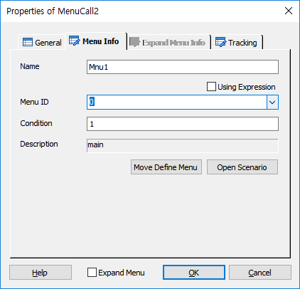
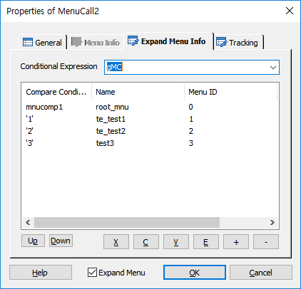
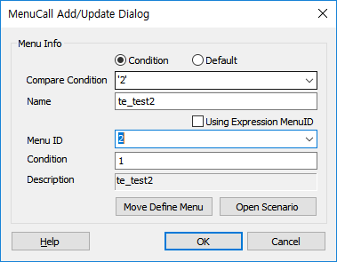
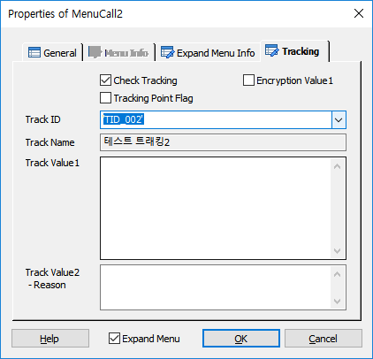

DefineMenu 에 정의된 메뉴를 호출 합니다.
ICON

PROPERTIES
 Menu Info
Menu Info

Name : 아이템 이름 이지만 설명처럼 쓰인다.(이름의 사용이 의미 없음)
Using Expression Check Box : Menu ID에 설정된 값을 연산식으로 처리 합니다.
Menu ID : DefineMenu Item 에 정의된 Menu ID를 지정 합니다.
Condition : 메뉴 호출 조건을 설정 합니다.
Description : 콤보 박스에 메뉴 ID 를 지정하면 메뉴의 이름을 표시 합니다.
Move Define Menu Button : 콤보박스에 메뉴 ID 가 지정 되어 있을 때, 버튼을 누르면 Global.ssfx 파일이 오픈되고 DefineMenu Item 속성 창이 팝업 되고 해당 메뉴로 이동 합니다.
Open Scenario Button : 콤보박스에 메뉴 ID 가 지정 되어 있을 때, 버튼을 누르면 해당하는 메뉴 시나리오 파일이 오픈 됩니다.
 Expand Menu Info
Expand Menu Info

Conditional Expression : 비교할 조건 식이나 값을 지정 합니다.
Up Button : 선택한 리스트를 위로 이동 합니다.
Down Button : 선택한 리스트를 아래로 이동 합니다.
X Button : 선택한 리스트를 잘라냅니다.(Ctrl+X)
C Button : 선택한 리스트의 내용을 복사 합니다.(Ctrl+C)
V Button : 복사한 리스트의 내용을 붙여넣기 합니다.(Ctrl+V)
E Button : 선택한 파라미터의 정보를 갱신 합니다.(리스트 더블클릭)
+ Button : 리스트를 추가 합니다.(추가창 팝업).
- Button : 선택한 리스트를 삭제 합니다.

Condition Radio Button : 비교할 조건을 선택(Digiti) 하거나 입력합니다.(Compare Condition)
Default Radio Button : 기본 조건을 지정 합니다.
Name : Menu Info의 Name과 같은 항목이며 설명처럼 쓰인다.(Menu ID 선택 시 Menu ID에 해당하는 Menu Name이 자동 설정됩니다.)
Using Expression Check Box : Menu ID에 설정된 값을 연산식으로 처리 합니다.
Menu ID : DefineMenu Item 에 정의된 Menu ID를 지정 합니다.
Condition : 메뉴 호출 조건을 설정 합니다.
Description : Menu ID 선택 시 Menu ID에 해당하는 Menu Name이 자동 설정됩니다.
Move Define Menu Button : 콤보박스에 메뉴 ID 가 지정 되어 있을 때, 버튼을 누르면 Global.ssfx 파일이 오픈되고 DefineMenu Item 속성 창이 팝업 되고 해당 메뉴로 이동 합니다.
Open Scenario Button : 콤보박스에 메뉴 ID 가 지정 되어 있을 때, 버튼을 누르면 해당하는 메뉴 시나리오 파일이 오픈 됩니다.
 Tracking
Tracking

트래킹을 처리합니다.
Check Tracking Check Box : Tracking을 사용 할 것인지를 체크합니다.
Tracking Point Flag Check Box : 특별한 Tracking Flag를 설정하여 SWAT에서 트래킹 시에 이 플래그가 설정된 항목만 트래킹 할 수 있습니다.
Encryption Value1 Check Box : Track Value1 속성 데이터에 대해서 암호화 처리를 합니다.
Track ID : 정의한 Track ID를 선택합니다.
- DefineTrack Item에 정의된 Track ID가 콤보박스 리스트로 제공됩니다.(Type이 없거나, MenuCall인 경우)
Track Name : Track ID를 선택하면 같이 정의된 이름을 출력합니다.(SWAT에서 이 이름으로 트랙킹 시에 사용합니다.)
Track Value1 : 트래킹 시에 사용할 값을 입력 합니다.
Track Value2 :트래킹 시에 사용할 값을 입력 합니다.(결과에 대한 Reason값)
RESULT
None.
RELATED